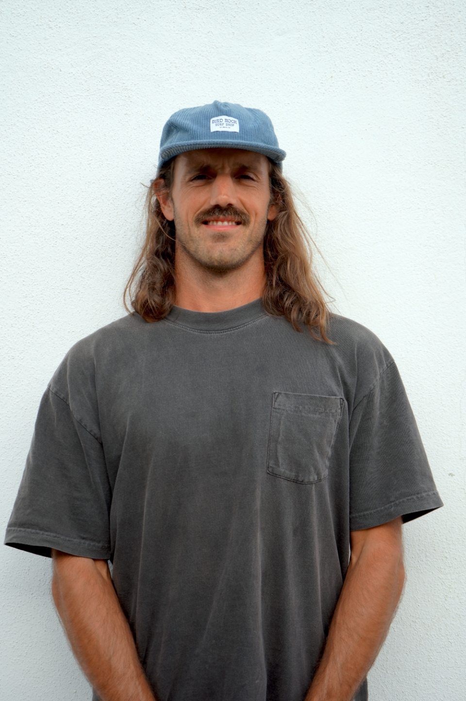

If you've been working on yourself for a while and the outer change still hasn't shown up, the order is off. Career, love, and confidence are one arc, not three problems. The Big Three Mastery Workshop walks the order. Watch the recorded session below.

Jason Crouse · Founder, Saints of Flow
Short preview only. The full workshop replay loads after the opt-in below.
Watch The Full Replay Or Book A CallYou've left the old career, the old relationship, or the old version of yourself, and the new one hasn't fully arrived yet. The work is real but the integration is slow. The arc is the missing piece.
You've built something already - a company, a portfolio, a partnership - and the next 90 days matter more than the last five years. You want methodology, not motivation.
You've read the books, done the courses, sat with the journals, and still feel the gap between insight and integration. The Big Three is the bridge most personal-development frameworks skip.
No fluff. No "manifest your dream life." The whole framework is built around installable practices and the integration work in between.
For Flow Code graduates ready to actualise the vision named in week 11. A 12-month room. Twelve to twenty seats. One arc.
Quarterly retreats. Monthly group coaching with Jason. Quarterly 1:1 vision-recalibration call. Private community channel. Investment is stage-specific and confirmed at intake.
By the end of week 5, the shame loop, the parts work, and the somatic check-ins are integrated. Voice activation begins.
Shame work, parts work, somatic regulation, voice activation. The work that comes before the work. Available as a standalone module for readers who want to start with the foundation before committing to the full Flow Code.
By the end of week 9, the anxious-avoidant loop is named, traced, and being repatterned. Secure attachment becomes a practice, not a personality.
Secure attachment as a daily practice. Flow-based communication. The four signals you're dating from the wound. The conversations that resolve the patterns the books only describe.
By the end of week 13, the vision actualisation framework is integrated. Thought medicine is being used. Leadership is sourced from inside, not performed.
Vision actualisation, thought medicine, leadership-after-self. The arc closes. Graduates either step into the Inner Circle or carry the methodology forward as alumni.
Weekly group coaching call inside The Flow Code. Community access bundled. Lifetime access to module video, prompts, and somatic practices. Investment is stage-specific, application-gated, confirmed at intake.
Jason Crouse · Founder, Saints of Flow
15 years in personal development. Homeless and jobless to Ivy League graduate to Silicon Valley operator to founding-team member on a high 8-figure acquisition. The methodology that became The Flow Code was built from the inside out, not from a textbook.
You don't need more frameworks. You need the order, the practice, and the room that holds you accountable to integrate them.
12+ named Flow Code graduates have shared their outcomes publicly on saintsofflow.com. The samples below mirror the named-graduate testimonials already live on the brand site - real outcomes, named clients, specific results.
Mirror samples of the named-graduate testimonials live on saintsofflow.com. Real names and full stories swap in here from the existing brand site library.
The live workshop is the May 13 session. This is the recorded version, available on demand. Same framework, same Jason, same depth. The replay opens for 5 days after you opt in, and during that window you can apply for the next Flow Code cohort if it's a fit.
The 13-week signature program. Three phases - Self (weeks 1 to 5), Love (weeks 6 to 9), Lead (weeks 10 to 13). Weekly group coaching, community access, application-gated. The workshop is the framework; The Flow Code is the integration.
The replay is free. The Flow Code is application-gated and the investment is stage-specific, confirmed at intake. We hint at the range publicly, but the exact figure depends on which cohort and which tier fits.
Self Phase is available as a standalone module. The first 5 weeks of The Flow Code (shame work, parts work, somatic, voice activation), packaged for self-paced delivery. $97 standard, $197 with optional monthly group call. Many graduates start there and apply for the full program 6 to 12 months later.
The 12-month room above The Flow Code, by invitation, graduate-only. Quarterly retreats, monthly group, quarterly 1:1, private community. For graduates ready to actualise the vision they named in week 11. Capped at 12 to 20 members per cohort.
Most readers report a shift in how they're holding the Big Three within the first 5 days of watching the replay. The deeper integration happens inside The Flow Code over 13 weeks. Self phase results often show up by week 3.
Standalone Self Phase: 14-day refund window if you decide it's not for you after week 1. The Flow Code: application-gated, refund terms confirmed at intake. The replay itself is free.
The application is brief and it routes you to the right tier - Self Phase, The Flow Code, or Inner Circle depending on where you are in the arc. Capped cohorts mean we can't take everyone, so the application keeps the rooms intentional.
Brief application. The replay loads after submission. 5-day countdown to apply for the next Flow Code cohort if it's a fit.
Brief form. The replay opens immediately after.
Brief application. The replay opens immediately. 5-day window to apply for the next Flow Code cohort if it's a fit. No setter calls. No back-and-forth.
Get The ReplayBrief form · Replay opens on submit
The order matters. Self before Love before Lead.